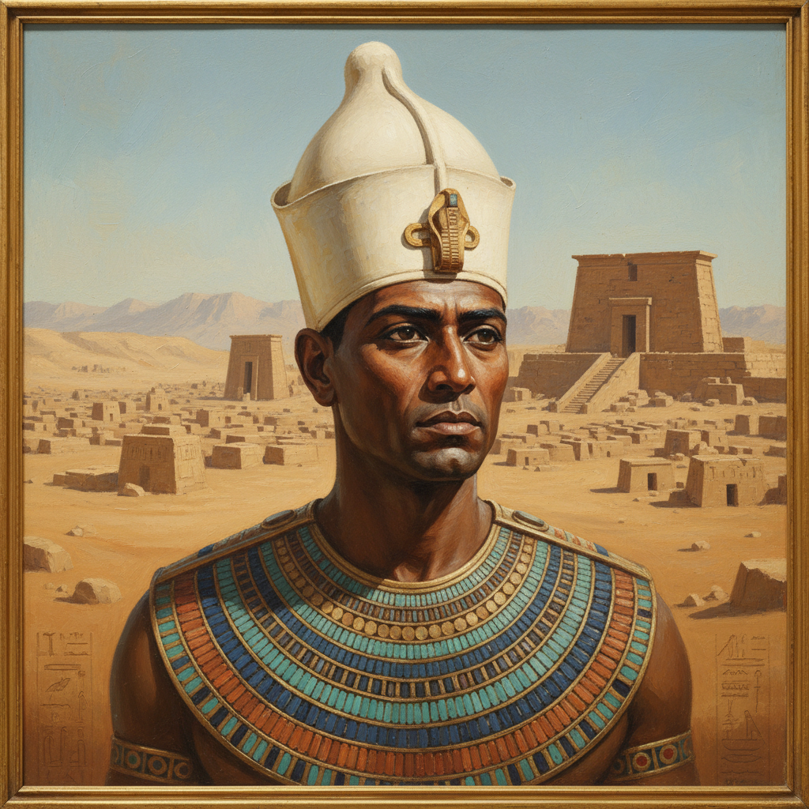

Aux origines de l’Égypte
Des premières dynasties à la Basse Époque : comprendre la grande fresque historique et les racines de la civilisation du Nil.
Voir les articlesUn espace pour explorer les légendes, les symboles et le chemin intérieur.

Salut ! Moi, c'est un apprenti archéologue numérique qui dépoussière des vieux mythes avec un clavier au lieu d'un pinceau. 🏺💻
Je suis ici pour une mission simple : transformer ma passion pour les légendes anciennes en un site web vivant, même si je débute dans le code ! Entre deux bugs CSS et des pyramides qui refusent de s'aligner, je construis ce petit univers pierre par pierre (ou ligne de code par ligne de code 😅).
L'Égypte telle qu'elle était : pharaons, temples, hiéroglyphes, rituels sacrés. Ici, on explore l'histoire authentique, les mystères des pyramides et la sagesse des anciens. 🏛️ 𓂀 ⚱️
Un voyage documentaire dans le passé, avec mes recherches, mes découvertes et parfois mes interprétations personnelles.
Et si l'Égypte rencontrait le futur ? Un univers où spiritualité ancienne et technologie se mélangent. Pyramides holographiques, oracles numériques, symboles réinterprétés. ⚡ 🔮 🌠
Un terrain de jeu créatif où je m'amuse à imaginer ce que donnerait l'Égypte ancienne avec un twist cyberpunk/spirituel.
Ce site est un work in progress permanent, comme moi ! Si tu es curieux d'histoire, de mythes, de spiritualité ou juste de voir comment un passionné transforme ses PDF en site web, bienvenue dans mon laboratoire digital ! 🧪⚗️
— Un explorateur en herbe qui code entre deux cafés ☕
Des premières dynasties à la Basse Époque : comprendre la grande fresque historique et les racines de la civilisation du Nil.
Voir les articles
Djéser, Khéops, Snéfrou : les coulisses des grands chantiers de pierre et l'âge d'or des pyramides (IIIe et IVe dynasties).
IIIe Dynastie (Djéser) IVe Dynastie (Khéops)
Djéser, Sekhemkhet, Khéops : les coulisses des grands chantiers de pierre et des pharaons bâtisseurs.
Voir les pharaons
Plongez dans la métaphysique égyptienne : l'âme (Ka, Ba), les rituels des temples et la sagesse des Neterou.
Explorer le sacréLes anciens Égyptiens n'avaient pas de mot pour désigner la "religion". Pour eux, le sacré n'était pas séparé de la vie quotidienne : il était présent dans chaque geste, chaque lever de soleil et chaque crue du Nil. Vivre en harmonie avec la Maât (l'ordre cosmique) était le but ultime de l'existence.
Ce site est né d’une passion pour la technologie, les mythes et la spiritualité. Il rassemble des articles pédagogiques et inspirants sur l’Égypte ancienne, pensés pour les curieux, les chercheurs de sens et les amateurs de symboles.
En savoir plus"Ne sois pas orgueilleux de ton savoir. Consulte l'ignorant comme le savant, car on n'atteint jamais les limites de l'art, et il n'y a pas d'artisan qui possède la perfection totale."— Enseignement de Ptahhotep (v. 2400 av. J.-C.)